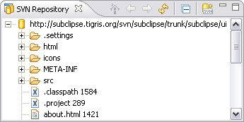

The SVN Repository View is part of the SVN Repository Exploring Perspective.

The SVN Repository view allows you to define and manage SVN repository locations within the Eclipse workbench. Repository files and folders are presented in a tree view with the top level of the tree representing a connection to a specific SVN Repository location. Once you have a location defined, you have access to a range of repository operations, including:

The context menu options available differ slightly depending on the entry selected in the SVN Repository View.
This menu option will evoke the New remote folder wizard.
This menu option will evoke the Add a new SVN Repository wizard.
This menu option will show the revision history for the selected file or folder in the History view.
This menu option allows two files or folders to be selected for comparison. The output of the compare is saved to a file in unified diff format.
If a .project file is found in the selected directory, an option is available to . This option will create a working copy in a new folder in your active workspace. If you want to create the working copy somewhere other than in your active workspace, you can use the option. You can then specify an alternative target for the working copy. If there is no .project file in the selected directory, you can use the option. This option will allow you to specify the type of project you wish to check out the location as and create a .project file for you in the working copy.
Export (copy) the selected resources to a designated target location.
Import a local or networked resource into the repository.
This option will evoke the Move or rename a remote resource wizard.
This option simplifies the copy and paste of repository resources by allowing you to complete the branch and tag process as a single step operation.
These options allow you to copy and paste file and folder resources directly in the repository. Paste is a commit operation and you will prompted to enter a comment as part of the paste process.
The delete option removes the selected resources from the repository. One or more files or folders can be selected for delete in a single operation. To select multiple resources, hold down the Shift and or Ctrl keys and click on the resources you want to delete. Delete is a commit operation and you will prompted to enter a comment as part of the delete process.
This option will copy the full repository URL for the selected resource to the Windows clipboard. This is useful if you want to share the repository URL with colleagues or reproduce the URL in an email, documentation or similar.
This option displays the properties for the selected repository resource including the URL, last change author, revision and date.
Refresh the SVN Repository View and update the display with the latest information from the repository.
The Relocate command is only used if the URL of the repository root has changed due to a server IP address change, protocol change (e.g. http:// to https://) or a change of the repository root path in the server setup.
Related Tasks
Checking out a Project
Branching and tagging
Related Reference
SVN Repository Exploring Perspective
History View
Create Unified Diff